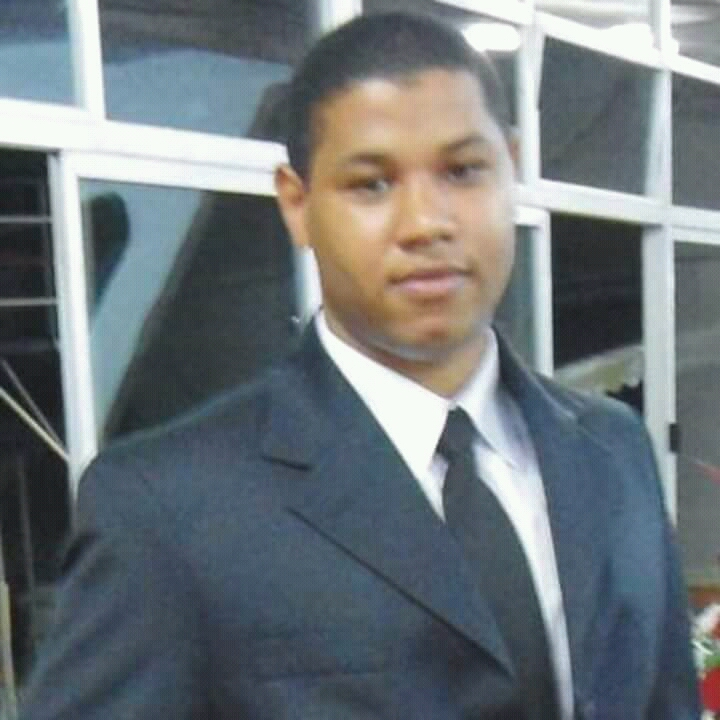

Giovai Alves Pereira

Curitibano, ainda morando em Curitiba, nascido no dia 12 de setembro de 1986 (praticamente ontem) formado em Engenharia Civil desde 2015, mas procura mudar pra área de tecnologia, pois encontrou na tecnologia a profissão que quer exercer.
- Resiliente;
- Esforçado;
- Ouve o outro lado.
Início